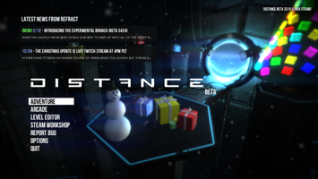
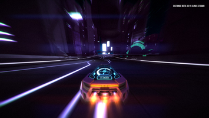
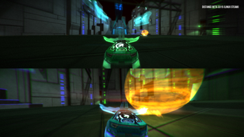

Distance
Dieser Artikel wurde für die folgenden Ubuntu-Versionen getestet:
Ubuntu 14.04 Trusty Tahr
Zum Verständnis dieses Artikels sind folgende Seiten hilfreich:
Distance  ist ein Arcade-Rennspiel, der von Refract Studios entwickelt wird. Er ist der geistige Nachfolger des kostenlos herunterladbaren Spiels Nitronic Rush , an dem einige der Entwickler selbst beteiligt waren. Ziel des Spiels ist es, mit einem Fahrzeug in möglichst kurzer Zeit Strecken mit Hindernissen zu durchfahren. Das besondere dabei ist, dass die Autos auf Knopfdruck fliegen können. Auch Mehrspielermodi sind vorhanden, bei denen man sich lokal oder online mit anderen Spielern messen kann. Begleitet wird das Spielgeschehen von elektronischer Musik, die sich je nach Situation dynamisch anpasst und mit der Spielwelt synchronisiert wird. Weiterhin ist es möglich, über einen integrierten Leveleditor eigene Level zu erstellen oder die Level anderer Spieler zu spielen. Finanziert wurde die Entwicklung von Distance über Kickstarter.
ist ein Arcade-Rennspiel, der von Refract Studios entwickelt wird. Er ist der geistige Nachfolger des kostenlos herunterladbaren Spiels Nitronic Rush , an dem einige der Entwickler selbst beteiligt waren. Ziel des Spiels ist es, mit einem Fahrzeug in möglichst kurzer Zeit Strecken mit Hindernissen zu durchfahren. Das besondere dabei ist, dass die Autos auf Knopfdruck fliegen können. Auch Mehrspielermodi sind vorhanden, bei denen man sich lokal oder online mit anderen Spielern messen kann. Begleitet wird das Spielgeschehen von elektronischer Musik, die sich je nach Situation dynamisch anpasst und mit der Spielwelt synchronisiert wird. Weiterhin ist es möglich, über einen integrierten Leveleditor eigene Level zu erstellen oder die Level anderer Spieler zu spielen. Finanziert wurde die Entwicklung von Distance über Kickstarter.
|  |
| Hauptmenü |
|  |
| Spielszene |
|  |
| Splitscreen-Spielmodus Soccer |
Installation¶
Steam¶
Distance kann mit Hilfe von Steam [1] installiert, gestartet und natürlich auch wieder deinstalliert werden. Nachdem man den Spieltitel im Steam Shop oder über den Client erworben hat, kann es anschließend mit letzterem installiert werden.
Spielmodi¶
| Spielmodi | |||
| Modus | Erklärung | ||
| Adventure | Im Adventure- bzw. Storymodus muss eine festgelegte Anzahl an Leveln durchfahren werden, die eine Art "Geschichte" erzählen. Zurzeit ist dieser Modus noch in einem recht frühen Stadium. | ||
| Arcade | Solo | Sprint | Hier gilt es, in möglichst kurzer Zeit eine beliebige Strecke zu durchfahren. |
| Speed And Style | Dieser Modus ist gewissermaßen eine Kombination aus dem Sprint- und dem Stuntmodus. Der Spieler muss die Strecke schnell abschließen und zusätzlich so viele Punkte wie möglich für Stunts sammeln. | ||
| Challenge | Die Strecken sind hier recht kurz, dafür aber relativ schwer. Es muss wieder versucht werden, das Ziel schnell zu erreichen, jedoch gibt es keine Checkpoints, sodass bei Versagen immer wieder von vorn begonnen werden muss. | ||
| Stunt | Der Spieler sucht sich eine Arena aus, in der er nun innerhalb eines festgelegten Zeitlimits möglichst viele Stunts ausführen muss, um Punkte zu sammeln. | ||
| Split-Screen | Reverse Tag | Ziel ist es, die größte Besitzzeit der pinkfarbenen Kugel zu haben. Dies erreicht man, indem man sich die Kugel auf dem Spielfeld schnappt und durch geschickte Fahrmanöver die anderen Spieler daran hindert, sie einem wieder wegzunehmen. | |
| Sprint | Die klassische Variante: Man sucht sich eine Strecke aus, auf der man gegeneinander fährt. Es gewinnt, wer zuerst im Ziel ist. | ||
| Challenge | Hier gilt dasselbe wie auch im Sprintmodus, jedoch sind die Strecken kürzer, schwerer und ohne Checkpoints. | ||
| Soccer | Hier wird gegeneinander "Autoball" gespielt. Wie beim klassischen Fußball muss der Ball, allerdings in diesem Fall mit Hilfe der an den Autos angebrachten Schilde, ins Tor des Gegners bugsiert werden. Wer die meisten Tore geschossen hat, gewinnt. | ||
| Stunt | Die Spieler müssen in Arenen versuchen, innerhalb eines festgelegten Zeitlimits durch Stunts mehr Punkte als ihre Mitspieler zu erreichen, um zu gewinnen. | ||
| Online | Hier können die aus dem Splitscreen bekannten Modi über das Internet gespielt werden. Wahlweise kann einem Spiel beigetreten oder eines erstellt werden. | ||
Steuerung¶
Das Spiel kann wahlweise mit der Tastatur oder eines Gamepads gespielt werden. Die Menüs bieten leider noch keine Mausunterstürzung. Eine Ausnahme bildet hier der Leveleditor. Im Folgenden ist die standardmäßig eingestellte Tastaturbelegung erläutert, die jedoch über die Einstellungen auf Wunsch an die eigenen Vorlieben angepasst werden kann. In den Einstellungen kann zudem die Empfindlichkeit der Steuerung eingestellt, so wie die Y-Achse der Flugsteuerung invertiert werden.
| Steuerung | |
| Taste(n) | Funktion |
 | Beschleunigen, Bremsen, Lenken, Flugsteuerung |
 | Düsen zur Korrektur der Lage und Drehen des Autos in der Luft; können auch verwendet werden, um Kurven schärfer zu nehmen |
| ⇧ | Booster |
| Springen, Fliegen | |
| E | Spezialfunktion |
| T | Wagen zurücksetzen |
| Esc | Pause |
| Q | Hupe |
| Tab ⇆ | Punkte anzeigen |
| C | Chat |
| V | Kameraansicht ändern |
Level-Editor¶
Der Level-Editor von Distance bietet die Möglichkeit, nach Lust und Laune eigene Strecken zu erstellen. Es kann die Musik und der Hintergrund ausgewählt, der Boost bzw. das Fliegen deaktiviert oder auf unbegrenzt eingestellt und viele Streckenelemente auf verschiedene Art und Weise modifiziert werden. Der Editor wird hauptsächlich mit der Maus gesteuert, es gibt jedoch nützliche Abkürzungen über Tasten. Zum Beispiel kann über Alt Gr + + (Tilde) zwischen dem Editor und dem Testmodus des Levels gewechselt werden, ohne jedes Mal das Pausemenü aufrufen zu müssen. Eine Einführung in den Editor findet sich zum Beispiel auf dem offiziellen YouTube-Kanal von Refract Studios (siehe Links).

Infobox¶
| Distance | |
| Genre | Action, Geschicklichkeit, Rennspiel |
| Entwickler | Refract Studios |
| Sprachen | |
| Veröffentlichung | 9. Dezember 2014 (Steam Early Access) |
| Systemanforderungen | Core 2 Duo 2,3 GHz/Athlon X2 2,5 GHz; 4 GB RAM; 5 GB Festplattenplatz; GeForce 8800GT/Radeon HD 3830 |
| Medien | Download |
| Läuft mit | nativ (Steam) |
 Übersichtsartikel
Übersichtsartikel- Erstellt mit Inyoka
-
 2004 – 2017 ubuntuusers.de • Einige Rechte vorbehalten
2004 – 2017 ubuntuusers.de • Einige Rechte vorbehalten
Lizenz • Kontakt • Datenschutz • Impressum • Serverstatus -
Serverhousing gespendet von